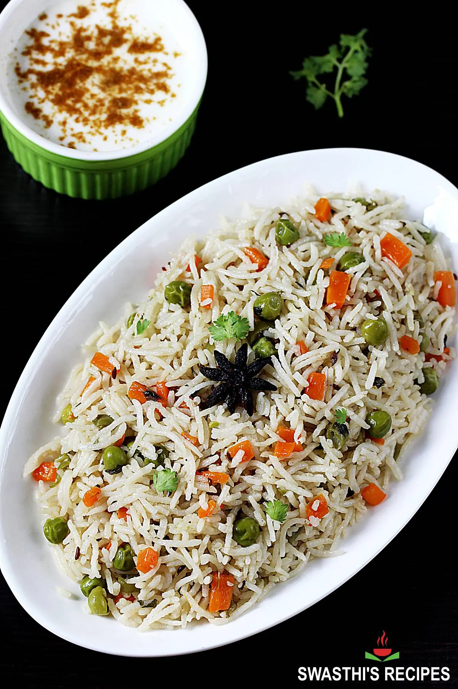

Pulav
Veg Pulao also known as Vegetable Pulao is a basic Indian style rice pilaf that is aromatic, delicious, healthy & super quick to make for a meal.
- Add 2 tablespoons oil or ghee to a cooker or pot. Add whole spices.
- When the spices begin to sizzle, add one thinly sliced onions. And then 1 to 2 slit green chilies. Saute them well.
- When the onions turn golden, add 1½ teaspoon ginger garlic paste.
- Saute well until the raw smell of ginger garlic disappears. Do not burn.
- Add mixed veggies and chopped mint/ pudina. I use peas, beans and carrots most of the times. You can also use potatoes and a handful of split cashews or softened soya chunks if you like.
- Next saute everything well until the mint smells good. Usually it takes about 2 to 3 minutes.
- Pour 2½ cups water if making in cooker and then add ½ teaspoon salt as well.
- Bring the water to a rolling boil, then add soaked & drained rice. Ensure there is no water in the rice, otherwise the veg pulao will turn mushy.
- Stir gently and taste test the water. If needed add more salt.